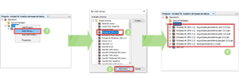
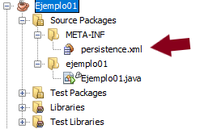
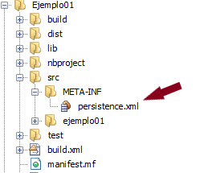

2.3.- ¿Cómo empiezo a usar JPA?

Seguro que ahora te estás preguntando por dónde empezar si quieres hacer un proyecto que use JPA. Pues vamos a ello. Pero antes hay un par de cosas que debes saber sobre JPA.
La primera es que JPA engloba un conjunto de librerías incluidas tanto en Java SE como en Java EE, esto quiere decir que si tenemos instalado en nuestro equipo un JDK, ya tenemos JPA. JPA contiene un conjunto de clases, conocidas como JPA API, que son las que usaremos para persistir datos. Usaremos siempre las mismas clases y métodos independientemente del almacén de datos donde estemos almacenando la información.
La segunda cosa que debes saber es que JPA no funciona solo. Obviamente se necesitará un almacén de datos para almacenar la información (MySQL, H2, etc.), pero también necesitaremos lo que denominamos un proveedor de persistencia. El proveedor de persistencia, también llamado motor de persistencia e implementación de JPA, es una librería que implementa en su interior la lógica de funcionamiento real de JPA.
JPA es solo una fachada que usaremos en nuestro programa, de forma que siempre usemos las mismas clases y métodos, pero quien hará el "trabajo sucio" será el proveedor de persistencia. Existen muchos proveedores de persistencia, es decir, muchas implementaciones de JPA, entre las que podemos destacar Hibernate, TopLink, DataNucleus AccessPlatform y EclipseLink. De todas las anteriores usaremos EclipseLink, no por ser la mejor, sino por ser la implementación de referencia.
Y ahora vamos al meollo de la cuestión: cómo usar JPA en un proyectoNetBeans. Lo primero que haremos será crear un proyecto como de costumbre, y a continuación, indicarle que necesitaremos una librería específica, la de EclipseLink:

Como se muestra en la imagen anterior, simplemente hay que ir a las librerías del proyecto, seleccionar la opción Add Library (añadir librería), después seleccionar la librería EclipseLink (JPA 2.1) y hacer clic en el botón Add Library (añadir librería) de la ventana emergente.
Añadir las librerías del proveedor de persistencia sería lo primero, lo segundo es añadir el archivo persistence.xml. Se trata de un archivo que cualquier aplicación que utilice JPA, ya sea Java EE o Java SE, necesitará tener. Este archivo contendrá la configuración necesaria para poder persistir objetos en el almacén de datos.
Para empezar, vamos a partir de un archivo persistence.xml como el siguiente. Como ya imaginas es un archivo XML que todavía no contiene gran cosa:
<?xml version="1.0" encoding="UTF-8"?>
<persistence version="2.1" xmlns="http://xmlns.jcp.org/xml/ns/persistence" xmlns:xsi="http://www.w3.org/2001/XMLSchema-instance" xsi:schemaLocation="http://xmlns.jcp.org/xml/ns/persistence http://xmlns.jcp.org/xml/ns/persistence/persistence_2_1.xsd">
</persistence>Dentro de la etiqueta <persistence>...</persistence> irémos añadiendo la información necesaria para usar JPA, tal y como veremos en próximos apartados. Este archivo debe ir incluido en el programa a distribuir al usuario final, es decir, debe ir dentro del archivo .jar que entregaremos al cliente. Para lograr esto es necesario crear el archivo persistence.xml en la carpeta META-INF, tal y como muestran las siguientes imágenes:

persistence.xml. (Dominio público)
persistence.xml. (Dominio público)En el mundo del software se denomina implementación de referencia al software que sirve de modelo para otras implementaciones. Normalmente, el resto de desarrolladores se basan en la implementación de referencia para realizar sus propias mejoras.
Aparte de instalar el proveedor de persistencia es necesario instalar también el driver o controlador de la base de datos a utilizar. Es un proceso que no se explica aquí porque ya se explicó en la primera parte de esta unidad.
Autoevaluación
Indica si la siguiente afirmación es verdadera o falsa:
Retroalimentación
Falso
Es falso. La API de JPA ya va incluida en el JDK. El objetivo de ese archivo es aportar la configuración necesaria para poder persistir objetos en el almacén de datos.